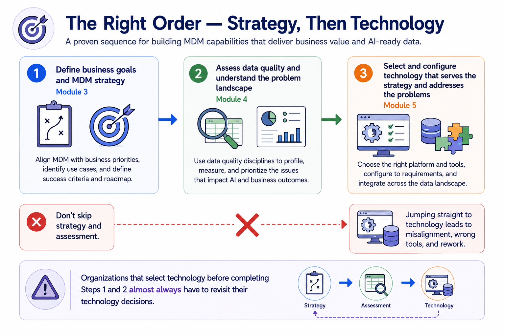
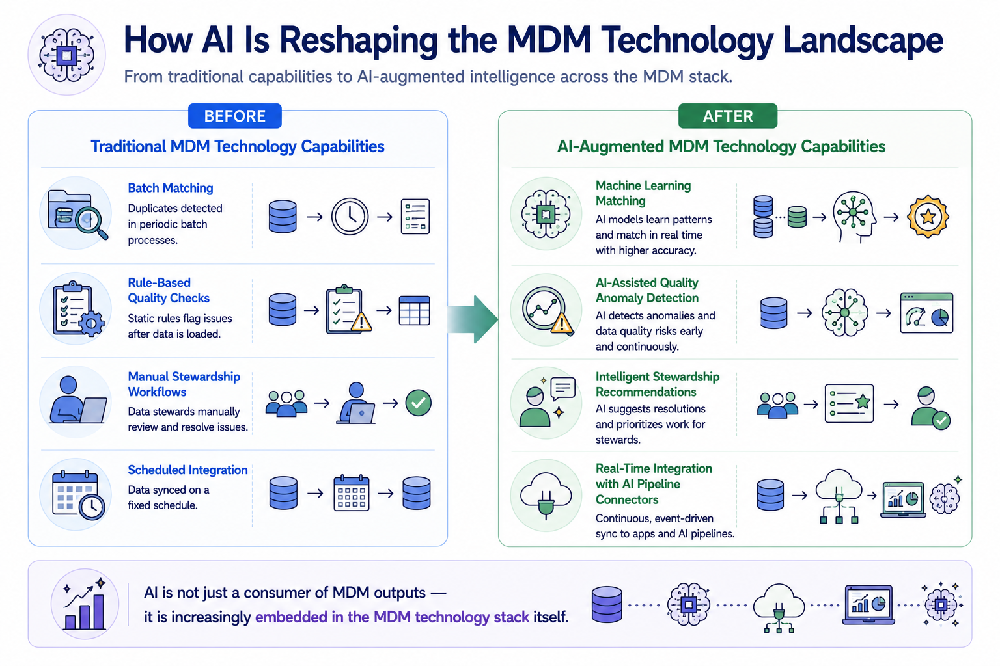
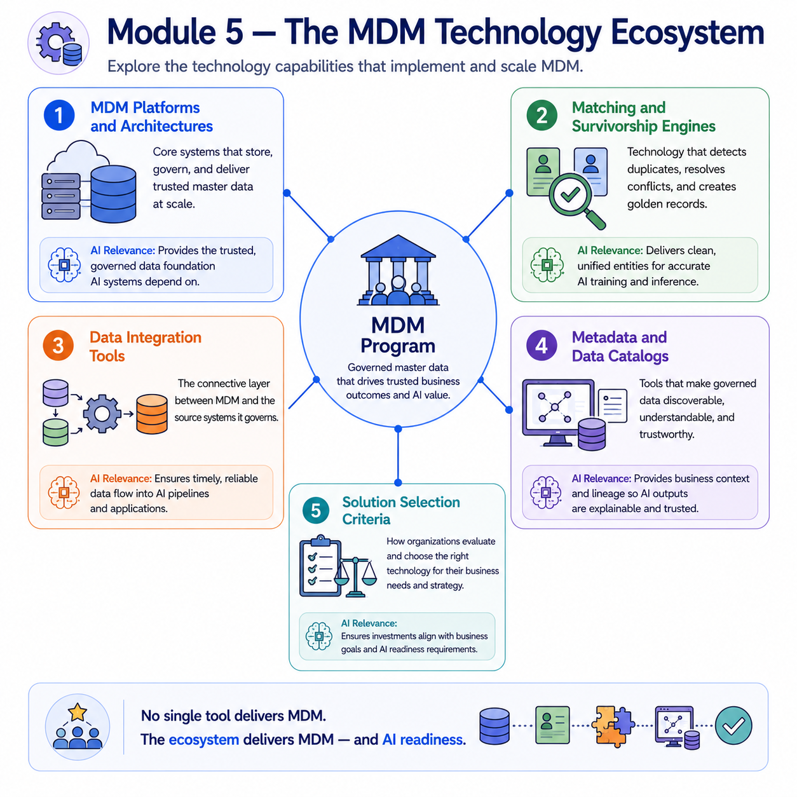

Tools and Technologies
Module support notes
Technology Enables Strategy, It Does Not Replace It
One of the most consistent patterns in MDM program failures is technology selection that precedes strategy definition and quality assessment. Organizations that select an MDM platform before they have defined their business goals, identified their priority domains, and assessed their data quality landscape consistently find that the platform they selected optimizes for capabilities they do not need while lacking support for the problems they actually have.
Module 5 is placed after Modules 3 and 4 deliberately — technology decisions made with clear strategic goals and a grounded understanding of the data quality landscape produce far better outcomes than technology decisions made in isolation from those inputs.
Warning
Organizations that select technology before completing strategy definition and quality assessment almost always have to revisit their technology decisions. The cost is not just financial — it is the time lost, the organizational credibility spent, and the MDM program momentum that has to be rebuilt after a platform switch or a significant reconfiguration.

The AI Technology Dimension
The relationship between AI and MDM technology runs in both directions. MDM produces the governed data that AI systems consume — this is the direction emphasized throughout previous modules. But AI is also increasingly embedded within MDM platforms themselves, improving matching accuracy, automating stewardship recommendations, detecting quality anomalies that rule-based systems miss, and optimizing survivorship decisions based on historical accuracy patterns.
Organizations evaluating MDM technology today should assess both dimensions — how well the platform produces AI-ready data outputs, and how effectively it uses AI internally to improve the quality and efficiency of MDM operations.
Note
AI is not just a consumer of MDM outputs — it is increasingly embedded in the MDM technology stack itself. Traditional MDM capabilities like batch matching and rule-based quality checks are being augmented by machine learning matching, AI-assisted anomaly detection, intelligent stewardship recommendations, and real-time integration with AI pipeline connectors.

No single tool delivers MDM — it takes an ecosystem of capabilities working together, each with a direct role in producing data that is both operationally trusted and AI-ready.
